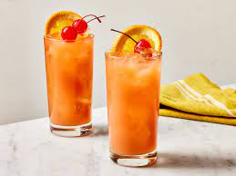

Sex on the Beach Recipes

"A combination of vodka, peach schnapps, orange juice, cranberry juice and crème de cassis, the Sex on the Beach skyrocketed in popularity in the 1980s and is often seen as a mashup of a Fuzzy Navel (peach schnapps and orange juice) and a Cape Codder (vodka and cranberry juice)."
Ingredients
- 1 1/2 ounces vodka
- 1/2 ounce peach schnapps
- 1/2 ounce Chambord or creme de cassis (optional)
- 1 1/2 ounces orange juice, freshly squeezed
- 1 1/2 ounces cranberry juice
- Garnish: cocktail umbrella
Steps
- Add the vodka, peach schnapps, Chambord (if using), orange juice and cranberry juice to a shaker with ice and shake.
- Strain into a highball glass over fresh ice.
- Garnish with a cocktail umbrella.